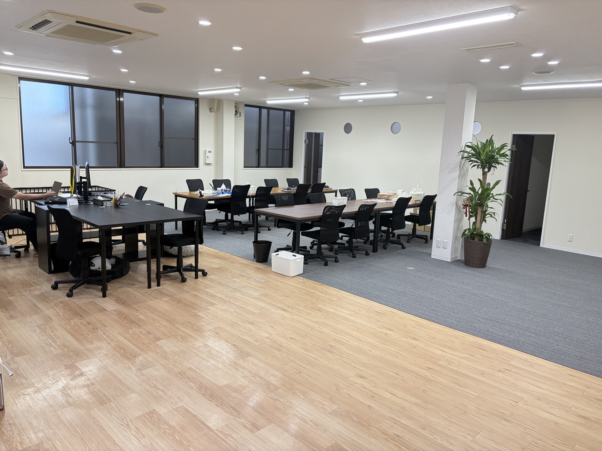
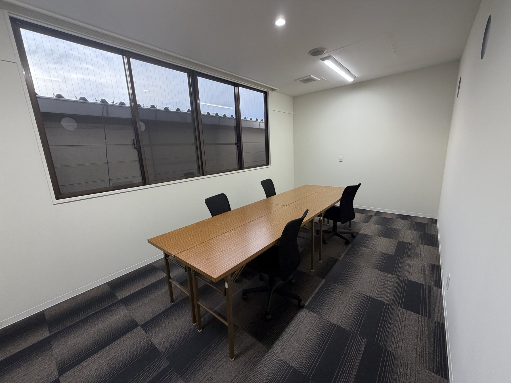
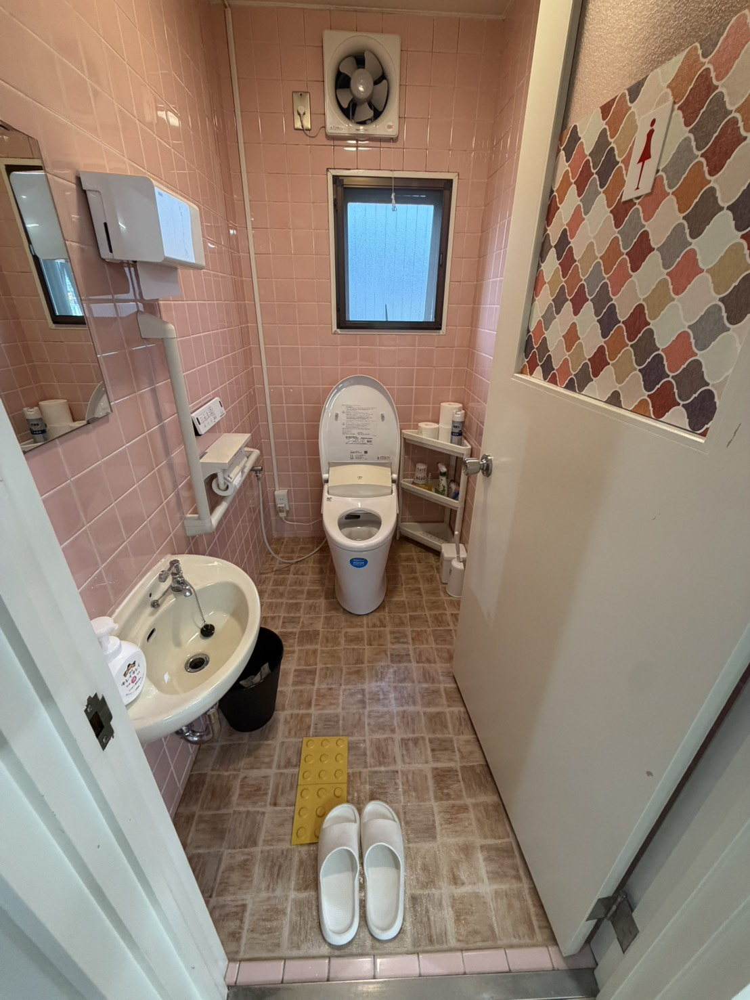
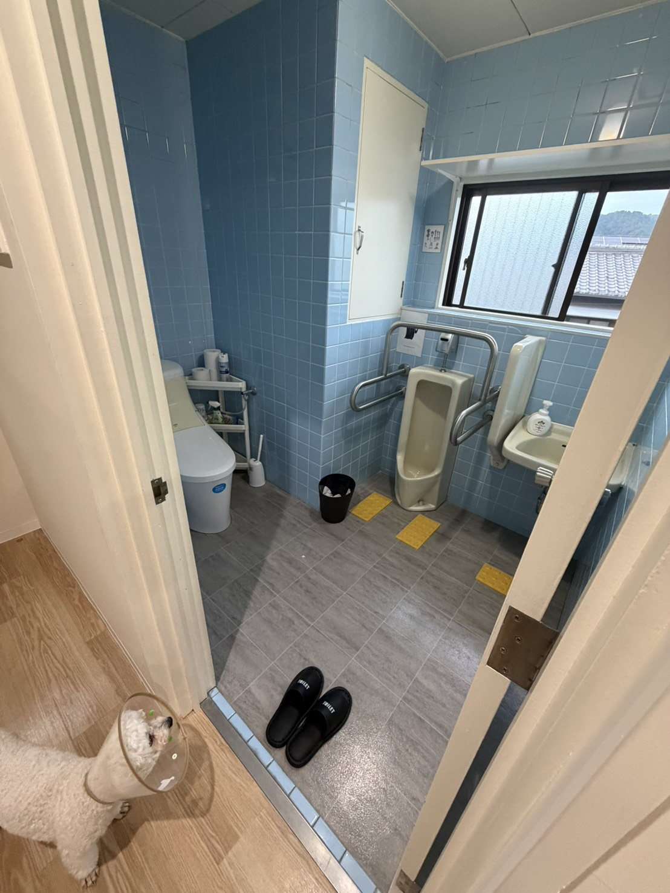
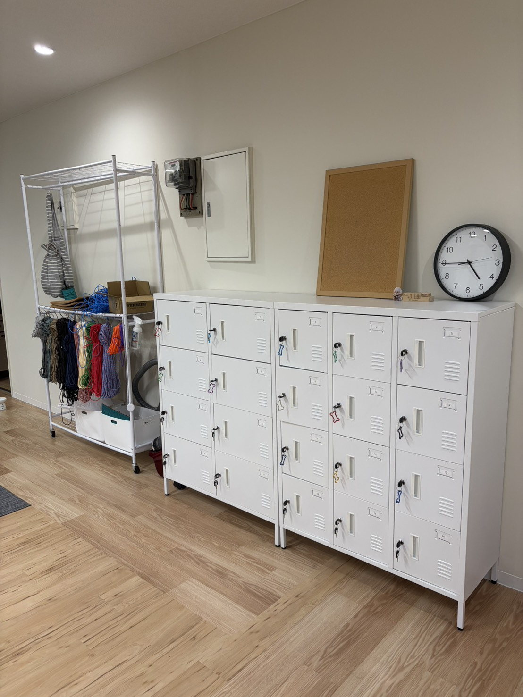

Access
アクセス
通所方法や送迎についても、お気軽にご相談ください。
事業所情報
| 事業所名 | 就労継続支援A型事業所 紡 -tsumugu- |
|---|---|
| 住所 | 〒607-8135 京都府京都市山科区大塚野溝町86-67 寺田ビル2F |
| 電話 | 075-634-5172 |
| FAX | 075-634-5235 |
| 営業時間 | 月～土 10:00～17:00 |
| 駐車場 | 駐車場完備。詳細はお問い合わせください |
| 送迎 | 山科駅より送迎可 |
Gallery
事業所の様子
作業室や面談室など、安心して過ごせる事業所内の設備をご紹介します。






